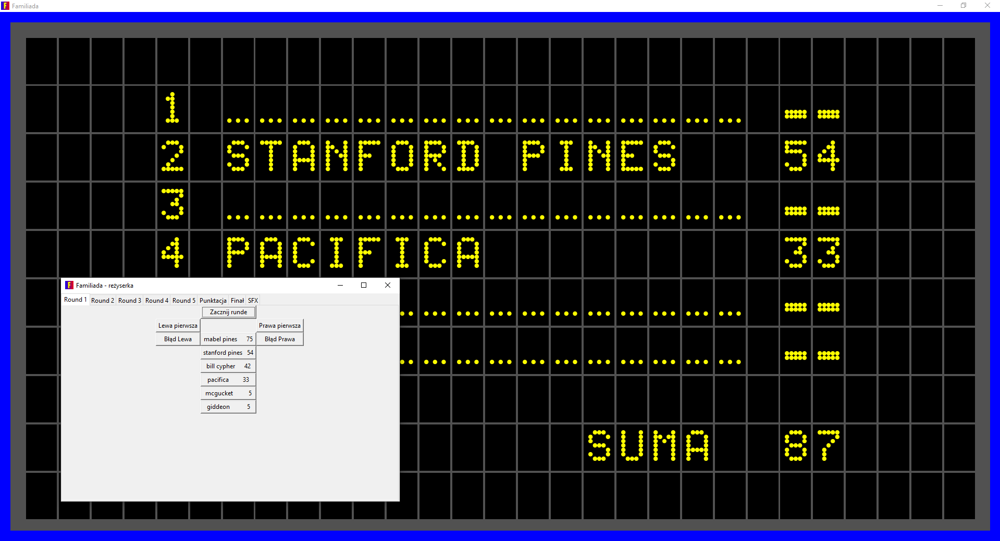
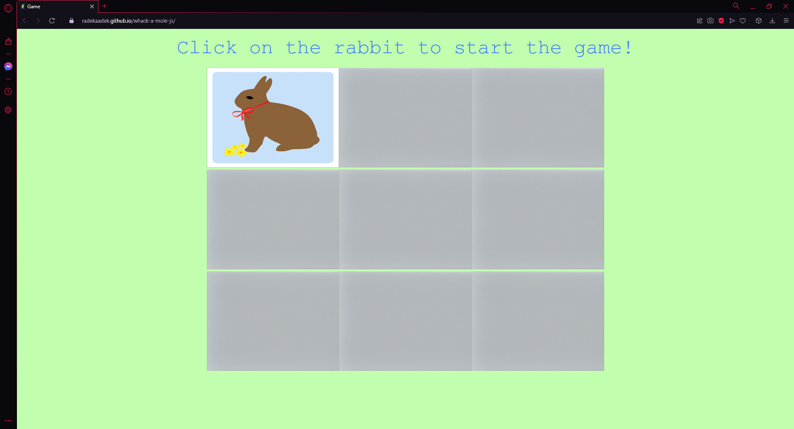
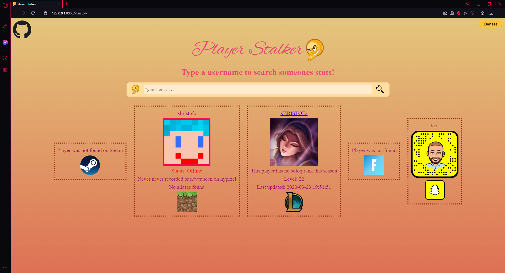

I am currently enrolled at the Warsaw University of Technology and specialize in data science, web development and python.
Preview of my personal projects:



Software engineer
I am currently enrolled at the Warsaw University of Technology and specialize in data science, web development and python.


